로봇의 뇌를 엣지에 올리기 — 메모리편: 인식과 모션을 16 GB Jetson 한 대에¶
현장 노트 · 메모리편. 지금까지 인식과 모션을 따로 시험했습니다. 16GB 정정편에서는 FoundationPose 하나가 16 GB에 들어가는지, 시뮬레이터편에서는 cuMotion과 UR 드라이버가 몇 시간을 버티는지 봤어요. 실제 셀은 둘을 함께 실행합니다. 카메라로 부품 자세를 구하고, 그 자세로 경로를 계획해 움직이죠. 그래서 둘을 Jetson 한 대에 함께 올리고 몇 시간씩 실행해 봤습니다.
결론부터 말하면, 16 GB 한 대로는 빠듯했습니다. 물체를 계속 추적하면 한 시간 남짓에 메모리가 바닥났어요. 그런데 범인은 예상했던 cuMotion이 아니었고, 인식을 쓰는 방식만 바꿔도 사정이 크게 달라졌습니다.
(앞 글들과 같은 Jetson Orin NX 16GB에서 한 R&D 기록입니다. 카메라와 인식은 실물로, 책상 위 미니 PC를 추적했습니다. 로봇은 URSim(UR12e 시뮬레이터)이고, 실제 로봇은 움직이지 않았습니다.)
30초 요약¶
- Jetson은 CPU와 GPU가 메모리 하나를 나눠 쓴다. GPU가 잡은 메모리는 스왑으로 밀어낼 수 없어서, 다 차면 Jetson 전체가 멈출 수 있다. 그래서 남은 메모리가 1 GB 아래로 내려가면 시험을 멈추게 했다.
- 모션만 실행하면 7.6시간 동안 멀쩡했다. 성공률 98.2%, 응답 12 ms 그대로, 전체 사용량 약 4.1 GB.
- 인식까지 함께 올리고 물체를 계속 추적하자 26분 만에 멈췄다. 어두운 사무실에서 남은 메모리 0.93 GB. 가장 큰 덩어리는 FoundationPose 컨테이너(Docker 기준 6.7 GB)였다.
- 설정을 줄여도 1시간 10분이었다. cuMotion 설정은 모션만 실행할 때는 1.3 GB를 아끼지만, 인식과 함께일 때는 cuMotion이 원래 2.5 GB 근처라 거의 차이가 없었다. CPU 8코어는 한 시간 내내 포화였다.
- 사이클마다 자세를 한 번만 구하자 24시간을 버텼다. 자세 2,399번 중 2,398번 성공, 한 번에 약 4초. 중간에 불이 꺼져 15.5시간은 어두웠는데도 마찬가지였다. 인식과 모션의 최고점이 번갈아 와서 겹치지 않는다. 다만 남은 메모리 최저가 1.18 GB라, 1 GB 경고선까지 여유가 0.2 GB도 안 됐다. Jetson을 9일째 켜 둔 뒤 같은 방식으로 다시 실행했을 때는 3시간 만에 멈춤선에 닿았다. 인식 쪽 메모리가 몇 시간에 걸쳐 조금씩 늘고 있었고, 인식만 다시 띄우자 2.4 GB가 회복됐다.
- CPU를 잡아먹던 건 할 일 없는 스레드였다. 할 일 없이 돌던 스레드를 재우고 cuMotion에 주는 관절 상태를 50 Hz로 줄이자, 부하 평균이 약 7에서 2~3으로, 상자를 넘는 경로의 '경로 없음'이 16%에서 6~9%로 내려갔다. 같은 조건에서 4시간씩 연달아 비교해도 12.9%가 6.2%로 줄었다. 남은 실패는 재시도를 넣자 사이클 실패 0.7%까지 내려갔다. 메모리는 줄지 않았다.
- UR 드라이버가 죽은 건 연결 끊김 탓이 아니었다. ROS 2 Humble의 액션 처리 오류였다. 이동 목표를 덜 다시 보내자 덜 죽었지만, 감시 스크립트는 여전히 꼭 필요하다. 다시 띄울 때 멈추던 문제는 드라이버를 UDP 통신으로 바꿔 풀었다.
- 실제 셀이라면 16 GB 한 대에 다 올리지 않는다. Jetson 두 대로 나누거나, 더 큰 Jetson(AGX Orin 32/64 GB)을 쓰거나, 인식을 가볍게 하거나, 사이클마다 한 번 구하는 방식으로 설계한다. cuMotion을 고장 복구 때만 올리면 16 GB 한 대로도 평소에 약 7.5 GB가 남는다.
왜 메모리부터 보나¶
일반 PC는 CPU가 쓰는 RAM과 그래픽 카드의 GPU 메모리가 따로 있습니다. RAM이 모자라면 디스크로 밀어내는 스왑도 있고요. Jetson은 다릅니다. CPU와 GPU가 메모리 하나를 나눠 씁니다. 16 GB 모델이 실제로 보고하는 전체는 약 15.3 GB이고, 여기에 운영체제, 카메라, 신경망 모델, 경로 계획이 모두 들어가야 해요.
문제는 GPU가 잡은 메모리는 스왑으로 밀어낼 수 없다는 점입니다. 이 Jetson에도 압축 스왑(zram)이 7.8 GB 있었지만, 시험 내내 거의 쓰이지 않았어요. 메모리가 다 차면 느려지는 데서 끝나지 않고 Jetson 전체가 멈출 수 있습니다. 그래서 시험마다 감시 스크립트를 붙였습니다. 남은 메모리가 1.5 GB 아래면 경고를 남기고, 1 GB 아래면 시험과 cuMotion을 멈춰 Jetson을 지킵니다. 사이클마다 자세를 구한 시험부터는 기준을 조금 바꿨어요. 1 GB 아래로 내려가면 5초마다 지켜보다가, 0.8 GB 아래면 멈춥니다.
시험은 이렇게 했다¶
로봇 쪽은 시뮬레이터편의 장시간 시험을 그대로 썼습니다. 오래 켜 두는 클라이언트 하나가 한 사이클을 계속 반복합니다.
- Pilz PTP로 홈 자세
- cuMotion으로 상자를 넘어 50 cm 이동
- Pilz LIN으로 10 cm 내려갔다 올라오기
- cuMotion으로 돌아오기
한 사이클은 30~50초쯤 걸립니다. 단계마다 성공 여부, 응답 시간, 계획 시간을 기록하고, 컨테이너마다 메모리와 CPU를 1분마다 기록했어요.
인식 쪽은 튜닝편까지 만든 체인입니다. OAK-D 카메라 영상에서 Grounding DINO로 물체를 찾고, SAM2로 마스크를 따고, ESS로 깊이를 계산하고, FoundationPose가 6-DoF 자세를 구해 추적합니다. 컨테이너 두 개로 나뉘는데, 하나는 FoundationPose, 다른 하나는 카메라·검출·분할·깊이를 맡습니다.
16 GB를 누가 얼마나 쓰나¶

| 덩어리 | 메모리 | 메모 |
|---|---|---|
| FoundationPose 컨테이너 | 5.5 → 6.7~7.0 GB (Docker 기준) | 1분 만에 0.5~1.0 GB 떨어졌다가 2~3분에 걸쳐 다시 오름. GPU 할당은 4.08 GB로 평평 |
| 카메라·검출·분할·깊이 컨테이너 | 약 3.2~3.4 GB | 거의 일정 |
| cuMotion | 모션만: 2.4 → 3.8 GB. 인식과 함께: 2.0~2.6 GB | 누수가 아니라 캐시. 인식과 함께일 때는 덜 오름 |
| 드라이버·MoveIt·시험 클라이언트 | 약 0.3 GB | 거의 일정 |
| 운영체제 등 | 약 1.3~1.7 GB | 나머지 |
다 더하면 15.3 GB에서 1 GB 남짓이 남습니다. 모션만 실행할 때는 약 4.1 GB였으니, 인식이 그 두 배 넘게 차지하는 셈이에요. 컨테이너별 숫자는 Docker가 보고한 값이라 FoundationPose 쪽은 부풀려 보이지만(아래에서 다룹니다), 운영체제가 보고한 남은 메모리도 실제로 1 GB 남짓이었습니다.
cuMotion은 첫 한 시간 동안 2.4 GB에서 3.8 GB로 올랐다가 그 뒤로는 몇 시간째 그대로였습니다. 누수가 아니라 PyTorch가 GPU 메모리를 재사용하려고 쥐고 있는 캐시예요. 다만 쉬는 동안에도 내려가지 않고(30분 쉬는 동안 3.75 → 3.71 GB), 프로세스를 다시 시작해야만 풀립니다. 그러니 계획할 때 cuMotion 몫으로 약 4 GB를 잡아 둬야 합니다.
그런데 인식과 함께 실행한 세 가지 시험에서는 기본 설정이어도 cuMotion이 2.0~2.6 GB 안에 있었어요. 24시간 동안 실행한 시험에서도 마찬가지였습니다. 메모리가 빠듯하면 캐시를 덜 잡는 것인지, 이유는 아직 확인하지 못했습니다.
네 가지 시험이 버틴 시간¶
| 시험 | 조건 | 결과 |
|---|---|---|
| 모션만 | 인식 없음 | 7.6시간 동안 3,961단계 중 98.2% 성공, 응답 12 ms 그대로. 숫자에 더 변화가 없어 종료 |
| 계속 추적 | 어두운 사무실, 기본 설정 | 20분 뒤 남은 메모리 1.4 GB, 26분에 0.93 GB로 정지. 추적 6.8 → 4.5 fps, cuMotion 계획 1.3 → 2.0초 |
| 계속 추적, 설정 줄임 | 어두운 사무실 | 1시간 10분에 0.88 GB로 정지. 625단계 중 588단계 성공 |
| 사이클마다 자세 한 번 | 처음 8.5시간 밝음, 이후 15.5시간 어두움. 기본 설정 | 24시간 끝까지. 남은 메모리 최저 1.18 GB, 중간값 1.29 GB |
어두운 사무실은 일부러 고른 조건이 아니었습니다. 시험이 밤까지 이어지면서 불이 꺼졌고, 영상 평균 밝기가 255 중 19까지 떨어졌어요. 물체가 화면 가장자리에 걸려 있어서 놓치고 다시 찾는 일이 잦았습니다. 그래서 이 두 시험은 가장 나쁜 조건으로 보고 그대로 진행했어요. 사이클마다 자세를 구한 시험도 8.5시간째에 불이 꺼져 밤새 어두웠습니다.
멈춘 건 cuMotion 때문이 아니었다¶
처음에는 cuMotion을 의심했습니다. 모션만 실행할 때 메모리가 가장 많이 오른 게 cuMotion이었으니까요. 그런데 인식을 함께 올린 시험에서는 멈춘 순간의 cuMotion이 2.51 GB(26분)와 2.42 GB(1시간 10분)였습니다. 남은 메모리를 바닥까지 끌어내린 건 인식 쪽이었어요. 그중 가장 큰 것이 FoundationPose 컨테이너입니다.
FoundationPose는 두 가지 일을 합니다. 물체를 처음 찾을 때는 자세 후보를 수백 개 만들어 한꺼번에 점수를 매기고(등록), 그 뒤로는 앞 프레임의 자세에서 조금씩 고쳐 나갑니다(추적). 등록은 무겁습니다. 이번 시험에서도 한 번에 약 2.8~3초가 걸렸어요.
1시간 10분 만에 멈춘 '설정 줄임' 시험에서 Docker로 본 이 컨테이너의 메모리는 1분 만에 0.5~1.0 GB씩 떨어졌다가 2~3분에 걸쳐 다시 오르기를 되풀이했습니다(그림의 톱니). 다만 이 숫자는 조심해서 읽어야 합니다. Jetson처럼 CPU와 GPU가 메모리를 나눠 쓰면 Docker의 컨테이너별 숫자가 부풀려 보입니다. GPU 할당(nvmap)을 따로 기록한 '사이클마다 자세 한 번' 시험을 보면, FoundationPose의 GPU 메모리는 등록을 수백 번 하는 동안 4.08 GB에서 움직이지 않았어요. 오르내린 건 GPU 할당 바깥이었습니다. 그렇다고 허수는 아니었습니다. Docker 숫자가 1 GB 오를 때 운영체제가 보고하는 남은 메모리도 약 0.5 GB 함께 줄었어요. 무엇이 오르내리는지는 아직 정확히 모릅니다. GPU 할당은 새지 않았어요. 24시간 시험에서 내내 4.08~4.11 GB였고, 남은 메모리의 최저점도 2시간째부터 끝까지 1.2 GB 근처에서 더 내려가지 않았습니다. 다만 뒤에서 다룰 12시간 시험에서는 이 컨테이너의 GPU 바깥 메모리가 밤새 시간당 약 70 MB씩 천천히 올랐어요. 며칠씩 켜 두는 셀이라면 지켜봐야 할 숫자입니다.
정리하면, 인식 쪽이 이미 10 GB 가까이 차지해 남은 메모리가 1 GB 남짓인 상태에서 이 오르내림이 겹치면 한계를 넘습니다. 어두운 사무실에서는 시간의 30~50%를 물체를 다시 찾는 데 썼어요. 다시 찾는 횟수를 줄이는 것이 첫 번째 해결책 후보지만, 오르내림이 등록 때문인지는 아직 확인하지 못했습니다.
설정을 줄여 보다¶
같은 어두운 조건에서 설정을 줄여 다시 실행했습니다.
| 바꾼 것 | 효과 | 대가 |
|---|---|---|
| 데스크톱 끄기(headless) | 남은 메모리 +0.2 GB | 로그인한 데스크톱 세션이 없어서 효과가 작았다. 화면이 필요하면 SSH로만 접속 |
| ESS 가벼운 모델(ESS light) | 깊이 64~70 → 45 ms | 깊이 품질이 조금 낮다 |
| cuMotion 후보 수 줄이기 + PyTorch 캐시 정리 | 2.33 GB에서 평평, 계획 2.0 → 1.4초. 모션만이라면 3.8 GB 대비 약 1.3 GB 절약이지만, 인식과 함께일 때는 0.1 GB 남짓 | 상자를 넘는 경로에서 '경로 없음' 24% (모션만일 때 8%) |
cuMotion 설정은 모션만 실행할 때라면 효과가 큽니다. 3.8 GB까지 오르던 메모리가 2.33 GB에서 멈추니까요. 그런데 인식과 함께일 때는 기본 설정에서도 cuMotion이 2.5 GB 근처라, 이 시험에서 아낀 건 0.1 GB 남짓이었습니다. 시험이 26분에서 1시간 10분으로 늘어난 이유는 둘 중 하나로 보입니다. 데스크톱 끄기(+0.2 GB) 같은 작은 절약이 쌓였거나, 큰 오르내림이 오는 시점이 달랐거나. 시험 한 번씩으로는 구분할 수 없어요. 분명한 건 같은 이유, 인식 쪽 메모리로 결국 멈췄다는 점입니다. 설정은 한계에 닿는 시점을 늦출 수는 있어도 막지는 못했습니다.
메모리 말고도 문제가 두 가지 더 있었습니다.
- CPU가 한 시간 내내 포화였다. 8코어 Jetson에서 부하 평균이 8을 넘었어요. 모션만 실행할 때는 2.5였습니다.
- UR 드라이버의 연결 끊김이 시간당 31번 났다. 이동 중 실패는 없었고 이동 사이에 다시 연결됐지만, 실제 로봇이라면 그냥 넘길 수 없는 숫자입니다. UR 드라이버는 2 ms마다 로봇에 응답해야 하는데, Jetson의 리눅스는 실시간 커널이 아니라 CPU가 바쁘면 응답이 밀립니다. 드라이버가 아예 죽은 것도 한 번 있었어요(감시 스크립트가 32초 만에 다시 띄움). 이건 연결 끊김과는 다른 문제였는데, 뒤에서 다룹니다.
인식 쪽에도 해결책 후보는 있습니다. 앞뒤 뒤집힘 검사를 끄면 등록이 절반쯤으로 줄고(대신 대칭 부품에서 180° 뒤집힐 위험), 몇 프레임 연속으로 나빠야 놓친 것으로 보면 다시 찾는 횟수가 줄고, 쓰지 않는 검출 모델을 올리지 않으면 0.5~1 GB가 빠질 것으로 봅니다. 아직 재 보지 않은 추정입니다. 다만 이것들로는 연결 끊김이 풀리지 않아요. CPU 포화는 뒤에서 따로 다룹니다.
사이클마다 자세 한 번¶
실제 셀을 다시 생각해 보면, 부품 자세가 매 순간 필요한 경우는 많지 않습니다. 부품이 컨베이어에서 멈추면 한 번 보고, 그 자세로 집으러 가면 되죠. 그래서 시험 클라이언트를 바꿨습니다. 사이클 시작에 인식을 켜서 자세를 하나 받고, 인식을 끈 뒤 계획하고 움직입니다.
이렇게 하면 인식의 최고점(등록)과 모션의 최고점(계획)이 번갈아 옵니다. 팔이 서 있는 동안 자세를 구하고, 팔이 움직이는 동안 인식은 쉬니까요. 매 사이클이 등록으로 시작하는데도 메모리는 버팁니다.
| 항목 | 결과 (24시간, 10월 5일 11시 → 6일 11시) |
|---|---|
| 자세 구하기 | 2,399번 중 2,398번 성공, 중간값 3.9초, 95%가 4.8초 안. 실패한 1번은 30초 시간 초과 |
| 남은 메모리 | 최저 1.18 GB(새벽 3시, 어두울 때), 중간값 1.29 GB. 1 GB 아래로 내려간 적 없음 |
| 모션 단계 | 95.8% 성공. PC 재부팅과 시뮬레이터 이전 때를 빼면 96.2%. 상자를 넘는 경로에서 '경로 없음' 16% |
| UR 드라이버 | 4번 죽었고(아래 'UR 드라이버는 왜 죽었나'), 감시 스크립트가 매번 약 30초 만에 다시 띄움. 마지막 12.5시간은 한 번도 죽지 않음 |
| 손목 끼임 보호 정지(C403) | 0번 (시뮬레이터편의 세 겹 대책 그대로) |
| CPU 부하 평균 | 약 6.9 (8코어). 밤 11시 이후로는 7.5 안팎 |
남은 메모리는 시험 내내 오르내렸지만 바닥은 그대로였습니다. 2시간째부터 끝까지 시간대별 최저가 1.18~1.25 GB 사이였고, FoundationPose의 GPU 할당도 4.08~4.11 GB에서 움직이지 않았어요. 밝은 낮에는 1.2~2.0 GB 사이를 크게 오르내렸고, 밤에는 1.25 GB 근처에 붙어 있었습니다.
시험을 시작하고 8.5시간쯤 지나 사무실 불이 꺼졌습니다. 앞의 두 계속 추적 시험이 메모리 한계에 걸렸을 때와 같은 밤의 어두운 사무실이었어요. 그래도 남은 15.5시간 동안 자세 1,538번을 하나도 빠짐없이 구했습니다. 그러니 버틴 이유를 조명만으로는 설명할 수 없습니다. 같은 어둠 속에서 계속 추적은 한 시간 남짓에 멈췄고, 한 번씩 구하는 방식은 끝까지 버텼으니까요. 다만 물체 위치까지 똑같이 맞춘 비교는 아니라서, 방식이 얼마나 기여했는지까지는 말할 수 없습니다.
그렇다고 16 GB 한 대로 충분하다는 뜻은 아닙니다. 가장 빠듯했던 순간 남은 메모리는 1.18 GB로, 멈춤 기준(1 GB)까지 0.2 GB도 남지 않았어요. 모델을 하나 더 올리거나 nvblox를 켜면 바로 넘칠 수 있는 여유입니다. 부품이 사이클 중에 움직이지 않는 셀이라면 이 방식이 현실적이지만, 실제 생산 셀이라면 AGX Orin 32 GB처럼 여유 있는 Jetson과 함께 쓰는 편이 맞다고 봅니다.
남은 숙제도 분명합니다. '경로 없음' 16%는 모션만 실행할 때(8%)의 두 배쯤입니다. 두 시험 모두 cuMotion은 기본 설정 그대로였으니 설정 탓은 아닙니다. 메모리를 아끼려고 후보 수를 줄인 건 앞의 '설정 줄임' 시험뿐이었고, 그때는 24%로 더 높았어요. 밝을 때 17%, 어두울 때 15%로 조명과는 상관없어 보여요. 가장 큰 원인은 CPU 부하였습니다. 바로 다음 절에서 다룹니다. 시험 클라이언트는 첫 실패에서 그 사이클을 실패로 처리하고 재시도하지 않아서, 2,399사이클 중 448사이클(다섯 번에 한 번꼴)이 실패로 기록됐어요. 그중 375사이클이 '경로 없음'이었고, 시뮬레이터가 실행되던 PC를 재부팅했을 때와 시뮬레이터를 다른 PC로 옮길 때 난 실패도 섞여 있습니다. 실제 셀이라면 재시도와, 계획이 실패할 때 쓸 대체 경로(Pilz 직선 이동이나 미리 가르친 경로)가 꼭 있어야 합니다.
CPU를 잡아먹던 건 할 일 없는 스레드였다¶
부하 평균 6.9는 이상한 숫자였습니다. 이 방식에서는 팔이 움직이는 동안 인식이 쉬는데도 8코어가 거의 꽉 차 있었으니까요. 프로세스별로 보니, 쉬어야 할 것들이 CPU를 쓰고 있었습니다.
- 인식 앞단(카메라·검출·분할·깊이)이 CPU 112~129%, 코어 하나 넘게 쓰고 있었습니다. 할 일이 없는 OpenMP 스레드가 잠들지 않고 계속 돌며 기다렸고(바쁜 대기), PyTorch는 스레드를 8개 잡았고, 쉬는 동안에도 매 프레임 왜곡 보정, 화면 그리기, JPEG 압축을 했어요.
- cuMotion은 66~73%. 로봇 관절 상태(
/joint_states)를 500 Hz로 그대로 받고 있었습니다. 계획에는 그렇게 자주 필요하지 않아요.
그래서 두 군데를 고쳤습니다. 인식 앞단은 OpenMP 스레드가 기다릴 때 잠들게 하고(OMP_WAIT_POLICY=PASSIVE), PyTorch 스레드를 2개로 줄이고, 쉬는 동안에는 화면을 1초에 두 번만 갱신하게 했어요. cuMotion에는 관절 상태를 50 Hz로 솎아서 넘기고, 충돌 구 갱신도 100 Hz에서 10 Hz로 낮췄습니다. 같은 '사이클마다 자세 한 번' 방식으로 한 시간 동안 실행한 결과입니다.
| 24시간 시험 | 고친 뒤 (1시간) | |
|---|---|---|
| 인식 앞단 CPU | 112~129% | 37% |
| cuMotion CPU | 66~73% | 42% |
| 부하 평균 (8코어) | 5.5~7.6 | 1.9 |
| 상자 넘기 '경로 없음' | 16% (첫 한 시간 12.8%) | 6.1% |
| 계획 시간 중간값 / 95% | 1.48 / 8.7초 | 1.14 / 4.5초 |
| 모션 단계 성공 | 96.2% | 98.8% |
한 시간은 짧아서 같은 설정으로 12시간을 더 실행했습니다(10월 6일 저녁 → 7일 아침). 화면용 브리지를 끈 채 어두운 밤을 보낸 8시간 동안 '경로 없음'은 8.5%였어요. 시간대별로 4~12%를 오갔고 늘어나는 추세는 없었습니다. 모션 단계 98.5%, 어둠 속 자세 816번 모두 성공. 24시간 시험의 16%보다 확실히 낮고, 모션만 실행할 때(8%)와 비슷합니다.
이어서 14시간을 더 실행한 시험에서도 '경로 없음'은 약 7%로 일정했습니다. 시간대별로는 0~14%를 오갔지만 통계로 보면 우연한 변동 수준이었고, 실패가 연달아 몰리지도 않았어요(연속 실패 3번, 우연일 때 기대값 6.7번). cuMotion만 다시 시작해 봐도 달라지지 않았습니다(5.4% → 5.1%). 매 사이클 똑같은 계획 문제를 주는데도 가끔 답을 못 찾는 것이라, 실제 셀에서는 재시도와 대체 경로로 대비해야 합니다. 한 시간에 계획이 100번쯤이니 어느 한 시간의 12~13%는 잡음으로 봐야 해요. 발열도 원인이 아니었습니다. 온도는 53~57°C(차단 기준 99°C)였고 CPU 클럭도 떨어지지 않았어요.
다만 여기까지는 24시간 시험과 조건이 달랐습니다. 24시간 시험 중에는 시뮬레이터를 다른 PC로 옮겼고, 화면용 브리지를 켠 시간도 있었어요. 그래서 원래 설정과 고친 설정을 같은 조건에서 4시간씩 연달아 실행했습니다(10월 8일).
| 원래 설정 (4시간) | 고친 설정 (4시간) | |
|---|---|---|
| 상자 넘기 '경로 없음' | 12.9% (395번 중 51번) | 6.2% (384번 중 24번) |
| 계획 시간 95% | 9.3초 | 5.4초 |
| 부하 평균 (8코어) | 5.2 | 약 2.4 |
실패가 절반으로 줄었고, 우연으로 보기 어려운 차이입니다(p = 0.002). 다만 고친 곳이 둘(인식 앞단의 스레드, cuMotion에 주는 관절 상태)이라 어느 쪽의 효과가 얼마나 되는지는 구분하지 못했어요. 그날 밤 관절 상태 쪽만 끄고 켠 약 3시간씩의 비교에서는 9.3%(281번 중 26번)와 6.4%(249번 중 16번)였는데, 이 횟수로는 우연과 구별되지 않습니다(계획 시간 제한도 5초와 10초로 달랐습니다). 그래서 지금은 둘을 함께 켜 두기로 했습니다.
같은 밤 시험에서 남은 6%가 무엇인지도 확인했습니다. cuMotion이 경로를 마지막으로 다듬는 최적화 단계에서 실패한 것이고(FINETUNE_TRAJOPT_FAIL), 계획 시간 제한에 걸린 게 아니었어요. 제한이 5초일 때 실패한 계획은 10~12초가 걸렸고, 10초로 늘린 쪽에서는 오히려 5~7초 만에 끝났습니다. cuMotion은 이 단계에서 시간 제한에 맞춰 멈추지 않습니다. 실패하기까지 걸리는 시간은 CPU가 한가할수록 짧았어요. 그러니 시간을 더 줘서 풀 문제가 아니고, 실패하면 다시 요청하는 쪽이 맞습니다.
그래서 시험 클라이언트가 계획에 실패하면 세 번까지 다시 요청하게 고쳤습니다. 1시간 30분, 144사이클 동안 계획 실패는 8번 있었는데 모두 재시도에서 해결됐어요. 실패로 끝난 사이클은 1번(0.7%)이었고, 그 한 번도 계획이 아니라 시작 직후의 이동 실패였습니다. 재시도 전에는 사이클의 약 7%가 실패였어요.
메모리는 줄지 않았습니다. CPU를 아낀다고 메모리가 생기지는 않아요. 오히려 12시간 시험의 남은 메모리 최저는 0.87 GB로, 24시간 시험(1.18 GB)보다 낮았습니다. 새로 띄운 스택은 처음 두 시간 안에 남은 메모리가 0.95 GB 안팎까지 내려갔어요. 운영체제의 파일 캐시가 2.0 GB에서 0.6 GB로 비워지고, FoundationPose 컨테이너의 GPU 바깥 메모리가 5.4 GB에서 6.5 GB로 오른 탓입니다. 0.8 GB 멈춤선에는 닿지 않았지만, 실제 셀이라면 32 GB 쪽이 맞다는 결론은 더 확실해졌습니다.
그 뒤로는 멈춤선에 실제로 닿았습니다. 10월 8일 밤 같은 방식으로 실행한 두 시험이 3.0시간과 2.6시간 만에 0.8 GB 아래로 내려가 멈췄어요. 24시간을 버틴 것과 같은 구성인데도요. 기록을 보니 남은 메모리가 몇 초 동안 0.7~0.9 GB까지 크게 떨어졌다가 회복되는 때가 있었고, 24시간 시험에는 이런 일이 없었습니다. 이 급락 자체는 누수가 아니에요(몇 초 만에 회복됩니다). GPU 할당도 그 순간에 평소와 같았습니다.
달라진 건 Jetson의 상태였습니다. 9일째 켜져 있었고, 인식 프로세스는 5일째 실행 중이라 처음보다 약 0.3 GB 커져 있었고, 그날 낮 내내 사용한 뒤였어요. Jetson을 재부팅하고 한 시간씩 두 번 다시 실행하자 남은 메모리는 1.78 GB 아래로 한 번도 내려가지 않았습니다. 감시 스크립트가 30초마다 띄우는 확인용 프로세스도 의심했지만, 켰을 때와 껐을 때의 결과가 같았어요. 이어서 재부팅한 지 3시간 반 된 Jetson에서 5시간씩 두 번, 모두 10시간을 실행했을 때도 남은 메모리 최저는 1.11 GB와 1.25 GB였고, 1 GB 아래로는 한 번도 내려가지 않았어요.
여기까지 보고는 '새는 프로세스는 없다'고 판단했습니다. 프로세스별 메모리 숫자가 10시간 동안 늘지 않았으니까요. 틀린 판단이었어요. 다음 시험에서 2시간 만에 남은 메모리가 1.03~1.14 GB까지 내려가 시간당 약 0.1 GB씩 줄고 있었는데, 인식 쪽만 다시 띄우자 2.4 GB가 회복됐습니다(1.14 → 3.55 GB). 오래 실행한 인식 쪽의 메모리가 몇 시간에 걸쳐 조금씩 늘고 있었던 거예요. Jetson은 CPU와 GPU가 메모리를 함께 쓰기 때문에 이 증가분이 프로세스별 숫자에는 보이지 않았고, Docker 숫자에도 일부만 보였습니다. 어느 부분에서 늘어나는지는 아직 찾지 못했어요. FoundationPose 쪽의 GPU 캐시를 의심하고 있습니다.
그러니 24시간 결과를 '며칠을 켜 둬도 괜찮다'로 읽으면 안 됩니다. 16 GB 한 대로 간다면 인식 프로세스를 주기적으로 다시 띄우는 것이 선택이 아니라 필수예요. 인식 쪽만 다시 띄우는 데는 69초가 걸렸고, 지금은 매일 새벽에 한 번, 긴 시험 중에는 6시간마다 자동으로 다시 띄웁니다(이동 중이면 건너뜁니다). 다시 띄울 때는 설정을 전부 되살려야 합니다. 처음 만든 스크립트는 CAD 모델만 되살리고 찾을 물체를 가리키는 글자 지시는 기본값으로 돌려놓아서, 다시 넣어 줄 때까지 모든 자세 요청이 실패했어요.
UR 드라이버는 왜 죽었나¶
24시간 시험에서 UR 드라이버는 4번 죽었습니다. 처음에는 로봇과의 데이터 연결(RTDE)이 끊긴 탓으로 보였어요. 죽을 때마다 연결도 함께 끊겼으니까요. 그런데 드라이버 로그를 보니, 10월 5일부터 7일까지 감시 스크립트가 드라이버를 다시 띄운 7번 모두 직전에 같은 오류가 있었습니다.
Taking data from action server but no ready event
ROS 2 Humble의 액션 처리(rclcpp_action) 오류입니다. 새 이동 목표를 받은 지 몇 초 안에 드라이버 프로세스가 비정상 종료했고, 연결이 끊긴 건 그 결과였어요. 목표를 보내고 취소하는 횟수를 줄이거나, 이 문제가 고쳐진 rclcpp나 드라이버 버전을 쓰는 것이 해결책 후보입니다. 그 전까지는 감시 스크립트가 꼭 필요합니다. 이틀 치 드라이버 로그로 세어 보니 이동 목표 16,192번에 8번, 2,000번에 한 번꼴이었어요. 오류가 난 자리는 UR 드라이버의 코드가 아니라 ROS 2의 다중 스레드 실행기 안이었습니다.
다시 띄우는 것도 생각보다 까다로웠습니다. 12시간 시험에서는 다시 띄운 드라이버가 컨트롤러 일부만 켠 채 멈춰서, 프로세스는 살아 있는데 관절 상태가 나오지 않았어요. 그 사이 1시간 45분 동안 모든 사이클이 실패했습니다. 그래서 감시 스크립트가 프로세스만 보지 않고, 관절 상태가 실제로 새로 들어오는지, 필요한 컨트롤러가 모두 켜졌는지까지 확인하게 바꿨습니다. 그 뒤로 시험이 끝날 때까지 11시간 동안 드라이버는 한 번도 죽지 않았어요.
크래시 자체를 줄이는 방법도 하나 찾았습니다. 시험 클라이언트는 계획이 실패할 때마다 로봇 프로그램을 다시 보냈는데, 그때마다 제어 연결이 다시 맺어지고 컨트롤러가 꺼졌다 켜졌어요. 이걸 바꿔서 계획이 실패하면 그 사이클만 끝내고, 이동이 실패했을 때만 프로그램을 다시 보내게 했습니다. 그러자 약 14시간 동안 드라이버가 2번만 죽었어요. 전처럼 3~4시간에 한 번꼴이었다면 3~5번이었을 겁니다. 한 번 더 실행해 확인해야 하지만, 프로그램을 덜 자주 다시 보내는 것이 이 크래시를 줄이는 방향으로 보여요. 감시 스크립트도 다시 띄운 드라이버의 컨트롤러가 모두 켜질 때까지 최대 60초를 기다리게 고쳤고, 마지막 크래시는 28초 만에 완전히 복구됐습니다. 이 시험에서 사이클 성공은 92~94%, 모션 단계는 약 98.5%, 자세는 100%였습니다.
그런데 60초를 기다려도 안 되는 경우가 남아 있었습니다. 시험 클라이언트가 요청을 보내는 중에 드라이버를 일부러 죽여 보니, 서너 번에 한 번은 컨트롤러가 다 켜지지 않았어요. 컨트롤러를 켜는 프로세스가 ROS 2 통신(FastDDS)의 공유 메모리 연결을 만드는 데서 멈춰 있었습니다. 같은 순간에 뜬 다른 프로세스는 1초 안에 끝났는데도요. 드라이버 컨테이너만 공유 메모리 대신 UDP로 통신하게 바꾸자, 같은 조건에서 8번 죽여 8번 모두 별도 조치 없이 복구됐습니다(바꾸기 전에는 8번 중 5번). 그 뒤 10시간 시험에서는 드라이버가 실제로 3번 죽었는데, 세 번 모두 약 30초 만에 컨트롤러까지 모두 켜진 상태로 복구됐습니다. 컨트롤러가 일부만 켜진 재시작은 한 번도 없었어요.
실제 셀이라면¶
이 시험에서 얻은 결론은 이렇습니다. 16 GB Orin NX 한 대에 모션과 계속 추적을 함께 올리면, 나쁜 조건에서는 버티지 못합니다. 설정으로 늦출 수는 있지만 막지는 못했어요. 실제 셀을 설계한다면 그림의 네 가지에 나중에 더한 한 가지까지, 다섯 가지 중에서 고릅니다.
- Jetson 두 대. 인식 한 대, 모션 한 대. 메모리와 CPU를 서로 뺏지 않습니다. 자세는 네트워크로 넘기면 됩니다.
- 더 큰 Jetson. AGX Orin 32 GB나 64 GB에 지금 구조를 그대로 올립니다. 가격과 소비 전력이 올라가요.
- 인식을 가볍게. Grounding DINO 대신 그 부품으로 학습시킨 검출기, 쓰는 모델만 올리기, 다시 찾기 줄이기, 조명. 시작하기 글의 '문제를 푸는 가장 낮은 단계' 원칙과도 맞닿아 있습니다. 검출기만 바꿔도 약 0.5 GB는 아낄 것으로 봅니다. 같은 Jetson에서 NVIDIA의 RT-DETR 계열 검출기(SyntheticaDETR)는 약 0.6 GB를 썼고, Grounding DINO는 엔진만 4배 크기거든요. 사이클마다 한 번 방식과 합치면 16 GB 한 대의 여유가 0.2 GB에서 0.7 GB 안팎으로 늘어나는 셈이라, 한 대로 가는 구성도 검토해 볼 만해집니다. 아직 직접 비교해 잰 숫자는 아니라서, 며칠짜리 시험으로 확인해야 합니다.
- 사이클마다 한 번. 부품이 멈춰 있는 셀이라면 가장 싸게 해결됩니다. 24시간 시험도 어두운 밤까지 버텼어요. 대신 사이클이 자세 시간(약 4초)만큼 길어지고, 움직이는 동안 바뀐 것은 보지 못합니다. 16 GB에서는 여유가 0.2 GB도 안 되니, 2번과 함께 고르는 편이 안전합니다.
- cuMotion은 고장 났을 때만. 평소 사이클은 미리 정한 경로(Pilz의 관절 이동과 직선 이동)로 움직이고 cuMotion은 내려 둡니다. 이러면 평소에 남는 메모리가 약 7.5 GB예요. 팔이 예상 밖의 자세에서 멈췄을 때만 인식을 내리고 cuMotion을 올려 홈까지 가는 경로를 계획합니다. 시뮬레이터에서 임의의 고장 자세 6개로 해 보니 고장에서 홈까지 38~40초였고(그중 약 20초는 cuMotion이 뜨는 시간), 6번 모두 첫 계획에 성공했어요. 그동안 남는 메모리는 10.6~11.2 GB였습니다. 사이클마다 장애물이 달라지지 않는 셀이라면 16 GB 한 대로도 여유가 넉넉한 구성이에요. 다만 시뮬레이터에서만 확인했고, 실제 로봇에서는 아직 해 보지 않았습니다.
어느 쪽을 고르든 함께 챙길 것이 있습니다.
- 드라이버 감시. UR 제어 노드는 죽으면 스스로 살아나지 않습니다. 다시 띄운 뒤에는 관절 상태가 실제로 들어오는지, 컨트롤러가 모두 켜졌는지까지 확인해야 합니다. 재시작이 가끔 멈춘다면 ROS 2 통신의 공유 메모리부터 의심해 보세요.
- 할 일 없는 스레드가 CPU를 쓰지 않게. OpenMP 대기 방식, PyTorch 스레드 수, 토픽 주기부터 확인합니다.
- UR 드라이버에 실시간 커널과 전용 CPU 코어. CPU가 바쁘면 2 ms 응답이 밀립니다.
- '경로 없음'에 대한 재시도와 대체 경로.
- 가장 나쁜 조건에서 며칠짜리 시험. 이번에도 문제는 밝은 낮이 아니라 어두운 밤에 드러났습니다. 데모 몇 번으로는 보이지 않아요.
그리고 이번 시험에는 nvblox(실시간 장애물 지도)가 빠져 있습니다. cuMotion에 nvblox가 꼭 필요한 건 아니에요. 셀 안 물건이 늘 같은 자리에 있다면 미리 넣어 둔 장애물(상자, 메시)로 충분하고, 이번 시험도 바닥 판과 상자만 넣었습니다. 사람 손이나 매번 다른 물건을 피해야 하는 셀이라면 nvblox가 필요합니다. 따로 재 보니 책상 크기 장면, 2 cm 칸에서 메모리가 0.3~0.5 GB 늘었어요. 검출기로 아낀 만큼을 거의 다시 쓰는 셈입니다. 더 큰 비용은 팔이 움직이는 동안에도 깊이를 계속 계산해야 한다는 점이에요. 인식과 모션의 최고점을 번갈아 오게 하던 사이클마다 한 번 방식의 장점이 사라집니다. 그런 셀이라면 AGX Orin 32 GB나 Jetson 두 대가 맞습니다.
나중에 5번 방식의 고장 복구에서만 nvblox를 올려 봤습니다. 복구 경로 한가운데에 실제 물건(미니 PC)을 놓고 실제 카메라로 보게 했어요. 지도 없이 세운 계획은 그 물건 자리를 그대로 지나갔고(계산한 간격 7 mm), 지도를 준 계획은 145 mm 떨어져 돌아갔습니다. 고장에서 홈까지는 약 60초였어요. 다만 지도와 물건이 있으면 계획이 한 번에 되지 않는 일이 잦았습니다. 기본 설정으로는 20번 중 10번, 탐색을 늘린 설정으로도 20번 중 14번 성공이라 여기서도 재시도가 필요해요. 늘 같은 자리에 있는 고정물은 지도에 맡기지 않고 상자 모양으로 미리 넣어 두는 편이 낫습니다(그렇게 하자 고정물과의 간격이 0에서 136 mm로). 그리고 검출기를 가벼운 것으로 바꾸고 nvblox를 함께 올린 1시간 시험에서는 남은 메모리 중간값이 2.0 GB로, 원래 구성(2.1 GB)과 비슷했습니다. 검출기에서 아낀 만큼을 nvblox가 쓴다는 예상이 맞았던 셈이에요.
다른 사람들은¶
FoundationPose, cuMotion, UR 드라이버를 Jetson 한 대에서 몇 시간씩 실행하며 메모리를 기록한 공개 자료는 찾지 못했습니다. NVIDIA는 처리 속도와 지연 시간을 공개하지만, 여러 모델을 함께 오래 실행했을 때의 메모리는 다루지 않아요.
가장 가까운 것은 UC Berkeley와 Microsoft의 2026년 논문 「Offload or Overload」입니다. 이동형 조작 로봇의 전체 작업(인식, 지도, 학습 정책 등)을 운영체제까지 합쳐 실행하려면 약 50 GB가 필요해서, 32 GB AGX Orin에서는 한 번에 올릴 수 없었다고 합니다. 같은 학습 정책(π0.5)이 AGX Orin에서는 지연 440 ms에 성공률 30%, 더 큰 Jetson Thor에서는 144 ms에 80%였고요. 규모는 다르지만 결론은 같은 방향입니다. 엣지 컴퓨터 한 대에 다 올릴 수 있는지는 데모가 아니라 메모리 예산과 장시간 시험으로 확인해야 합니다.
정리¶
| 확인한 것 | 결과 | 걸린 것 |
|---|---|---|
| 모션만 | 7.6시간, 98.2%, 약 4.1 GB | cuMotion 캐시는 쉬어도 안 풀림 → 약 4 GB 잡아 두기 |
| 계속 추적, 어두움 | 26분에 메모리 한계 | 인식 쪽이 약 10 GB, FoundationPose 컨테이너가 오르내림. cuMotion은 2.5 GB |
| 설정 줄임 | 1시간 10분. 인식과 함께일 때 cuMotion 절약은 0.1 GB 남짓 | CPU 포화, '경로 없음' 24%, 연결 끊김 시간당 31번 |
| 사이클마다 자세 한 번 | 24시간, 자세 2,398/2,399, 약 4초. 밤새 어두워도 버팀 | 남은 메모리 최저 1.18 GB(여유 0.2 GB 미만), 9일 켜 둔 뒤에는 약 3시간에 멈춤선. 인식 쪽 메모리가 조금씩 늚(다시 띄우면 2.4 GB 회복) → 주기적으로 다시 띄우기. '경로 없음' 16%, 드라이버 4번 재시작 |
| CPU 정리 | 부하 평균 약 7 → 2~3, '경로 없음' 16% → 6~9%(같은 조건 비교 12.9% → 6.2%), 모션 단계 98.5~98.8% | 메모리는 그대로(12시간 최저 0.87 GB). 남은 6%는 cuMotion 최적화 실패. 재시도를 넣자 사이클 실패 0.7% |
| 실제 셀 | Jetson 두 대, AGX Orin 32/64 GB, 가벼운 인식, 사이클마다 한 번, cuMotion은 고장 때만(평소 약 7.5 GB 남음) | 드라이버 감시, 할 일 없는 스레드 정리, 실시간 커널, 재시도, 나쁜 조건의 장시간 시험 |
- 데모가 된다고 셀이 되는 건 아닙니다. 이번 스택도 몇 분짜리 데모에서는 아무 문제가 없었어요.
- 메모리 예산은 평균이 아니라 최고점으로 잡습니다. 넘친 건 평균이 아니라 오르내림의 꼭대기였습니다.
- Docker 숫자만 믿지 않습니다. Jetson에서는 GPU 할당(nvmap)과 운영체제가 보고하는 남은 메모리를 함께 기록해야 무엇이 실제로 메모리를 쓰는지 보입니다. 프로세스별 숫자가 그대로여도 안심할 수 없었어요. 다시 띄웠을 때 메모리가 얼마나 회복되는지가 가장 확실한 확인 방법이었습니다. 모션만 실행한 시험의 숫자로 인식과 함께일 때를 짐작해서도 안 됩니다. cuMotion이 그랬어요.
- 인식을 쓰는 방식이 하드웨어만큼 중요합니다. 계속 볼지, 한 번씩 볼지가 메모리와 CPU 사용량을 좌우합니다.
- CPU가 바쁘면 쉬어야 할 프로세스부터 봅니다. 부하가 높다고 할 일이 많은 건 아니었어요. 기다리기만 하는 스레드가 CPU를 계속 쓰고 있었습니다.
용어 설명¶
- 통합 메모리: CPU와 GPU가 같은 메모리를 나눠 쓰는 구조. Jetson이 이렇다
- 스왑(zram): 메모리가 모자랄 때 덜 쓰는 내용을 다른 곳(디스크나 압축 메모리)으로 밀어내는 기능. GPU가 잡은 메모리에는 쓸 수 없다
- 장시간 시험(소크 시험): 같은 동작을 몇 시간에서 며칠 동안 반복하며 느려지거나 새는 것이 없는지 보는 시험
- 등록과 추적: FoundationPose가 물체를 처음 찾을 때 자세 후보를 한꺼번에 채점하는 단계(등록)와, 그 뒤 앞 프레임 자세를 조금씩 고치는 단계(추적)
- 캐시: 다시 쓰려고 붙잡아 둔 메모리. 누수와 달리 어느 선에서 멈춘다
- nvmap: Jetson에서 GPU용으로 잡은 메모리를 관리하는 드라이버. 여기 기록으로 프로세스별 GPU 할당을 볼 수 있다
- 부하 평균: 실행을 기다리거나 실행 중인 작업 수의 평균. 코어 수와 같으면 CPU가 꽉 찬 것
- 바쁜 대기(busy-wait): 할 일이 없을 때 잠들지 않고 계속 확인하며 CPU를 쓰는 기다림 방식
- OpenMP: 계산을 여러 CPU 코어에 나눠 주는 라이브러리. PyTorch 등이 안에서 쓴다
- 실시간 커널: 정해진 시간 안에 응답하도록 만든 리눅스 커널. 로봇 드라이버처럼 몇 ms마다 응답해야 하는 프로그램에 쓴다
- headless: 화면(데스크톱) 없이 실행하는 방식
- nvblox: 카메라 깊이로 주변 장애물 지도를 실시간으로 만드는 NVIDIA 라이브러리